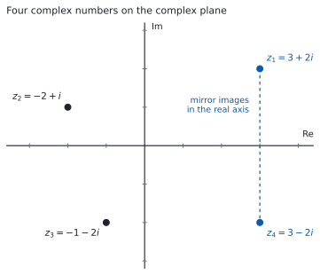
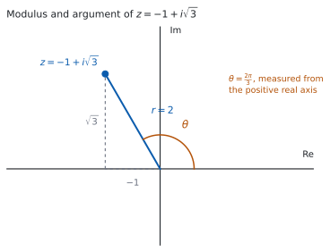

HL 1.12 — Complex numbers in Cartesian form（複素数：\(a+bi\) の形）
- \(i^{2} = -1\) を使って、\(i\) の累乗を整理できる。
- 複素数の real part（実部）と imaginary part（虚部）を言える。
- \(a+bi\) の形どうしを、足す・引く・かけることができる。
- conjugate（共役複素数）を使って、割り算を \(a+bi\) の形に直せる。
- 複素数を complex plane（複素平面）に置ける。
- modulus（絶対値）と argument（偏角）を求められる。
The idea
1. The number \(i\)（\(i\) という数）
\(x^{2} + 1 = 0\) という方程式には、実数の解がありません。 \(x^{2} \geq 0\) なので、\(x^{2} = -1\) になる実数はないからです（SL 2.7）。
そこで、\(2\) 乗すると \(-1\) になる数を \(1\) つ用意します。
\[ i^{2} = -1 \tag{1}\]
これが imaginary unit（虚数単位）です。名前は imaginary ですが、「存在しない数」という意味ではありません。 実数の直線の上にない、というだけのことです（第 3 節）。
\(i\) の累乗は、\(4\) つで一回りします
式 1 から順に掛けていきます。
\[ i^{1} = i, \qquad i^{2} = -1, \qquad i^{3} = i^{2} \times i = -i, \qquad i^{4} = i^{2} \times i^{2} = 1 \]
\(i^{4} = 1\) なので、ここから先は同じ \(4\) つがくり返されます。指数を \(4\) で割った余りを見れば、どれかが決まります。
\(15 = 4 \times 3 + 3\) なので
\[ i^{15} = \left(i^{4}\right)^{3} \times i^{3} = 1 \times (-i) = -i \]
2. Cartesian form（\(a+bi\) の形）
実数 \(a\)、\(b\) を使って \(a + bi\) と書いた数を、complex number（複素数）といいます。
\[ z = a + bi \tag{2}\]
公式集の 1.12 の欄に、次の \(1\) 行だけが印刷されています。
Complex numbers \(\quad z = a + bi\)
覚える式はここにはありません。 この項目で覚えるのは、\(i^{2} = -1\) と、第 5 節 の共役の使い方です。
\(a\) を real part（実部）、\(b\) を imaginary part（虚部）といい、\(\operatorname{Re}(z)\)、\(\operatorname{Im}(z)\) と書きます。
\(z = 3 + 2i\) なら \(\operatorname{Re}(z) = 3\)、\(\operatorname{Im}(z) = 2\) です。
\(\operatorname{Im}(z)\) は実数です。\(i\) は付けません。
\(z = 3 + 2i\) の虚部は \(2\) です。\(2i\) と答えると、\(\operatorname{Im}(z)\) の定義と合いません。
\(2\) つの複素数が等しいのは、実部どうしと虚部どうしが両方等しいときだけです。
\[ a + bi = c + di \iff a = c \ \text{かつ} \ b = d \tag{3}\]
これは見た目より強い決まりです。\(1\) つの等式から、実数の式が \(2\) 本取り出せます（例題 \(1\) のような問題は、これを使います）。
3. The complex plane（複素平面）
実数は数直線の上に並びますが、複素数は \(a\) と \(b\) の \(2\) つで決まるので、平面の上の点として表せます。

横軸に実部、縦軸に虚部をとります。横軸を real axis（実軸）、縦軸を imaginary axis（虚軸）といいます。\(z = a+bi\) は、点 \((a,\ b)\) に置きます（図 1）。
シラバスには、呼び名がもう \(1\) つ書かれています。
The complex plane is also known as the Argand diagram.
complex plane と Argand diagram は、同じものです。 問題文にはどちらも出ます。
4. Adding, subtracting and multiplying（足す・引く・かける）
\(i\) を文字だと思って、そのまま計算します。 最後に \(i^{2}\) が出てきたら \(-1\) に直すだけです。
\(z_1 = 3+2i\)、\(z_2 = -2+i\) で見ます。足し算は、実部どうし・虚部どうしです。
\[ z_1 + z_2 = (3-2) + (2+1)i = 1 + 3i \]
掛け算は、かっこを展開します。
\[ z_1 z_2 = (3+2i)(-2+i) = -6 + 3i - 4i + 2i^{2} \]
\(2i^{2} = -2\) なので
\[ z_1 z_2 = -6 - i - 2 = -8 - i \]
\(2i^{2}\) を \(2\) のままにするのが、いちばん多い誤りです。 展開したら \(i^{2}\) を探してください。
5. The conjugate（共役複素数）
\(z = a+bi\) に対して、虚部の符号だけを変えた数を conjugate（共役複素数）といいます。
\[ z^{*} = a - bi \tag{4}\]
この本では \(z^{*}\) と書きます。 \(\overline{z}\) と書く本もありますが、同じものです。
図 1 の \(z_1 = 3+2i\) と \(z_4 = 3-2i\) が、その組です。実軸について対称な位置にあります。
共役がありがたいのは、次の \(2\) つが実数になるからです。
\[ z + z^{*} = 2a, \qquad z z^{*} = a^{2} + b^{2} \tag{5}\]
\(z z^{*}\) のほうを確かめます。
\[ (a+bi)(a-bi) = a^{2} - abi + abi - b^{2}i^{2} = a^{2} + b^{2} \]
\(i\) の項が打ち消し合い、\(-b^{2}i^{2}\) が \(+b^{2}\) になります。 \(z = 3+2i\) なら \(z z^{*} = 9 + 4 = 13\)、\(z + z^{*} = 6\) です。
6. Division: making the denominator real（割り算：分母を実数にする）
\(\dfrac{4+7i}{3+2i}\) を \(a+bi\) の形にします。分母の共役を、分母と分子の両方に掛けます。
\[ \frac{4+7i}{3+2i} = \frac{(4+7i)(3-2i)}{(3+2i)(3-2i)} \]
分母は 式 5 から \(3^{2} + 2^{2} = 13\) です。分子は
\[ (4+7i)(3-2i) = 12 - 8i + 21i - 14i^{2} = 12 + 13i + 14 = 26 + 13i \]
\[ \frac{26 + 13i}{13} = 2 + i \]
分母を実数にしてから、実部と虚部に分けます。 分数のまま答えてもかまいませんが、\(a + bi\) の形に直すところまでが答えです。
TI-Nspire CX II は、複素数をそのまま計算できます。\(a+bi\) の形で入れれば、和・差・積・商が \(a+bi\) の形で返ってきます。
手で出した答えを入れ直して見くらべれば、符号の落としが見つかります。
Paper 1 では使えません。 ですから、このページの例題と演習は、すべて手で出せる数にしてあります。
7. Modulus and argument（絶対値と偏角）
複素平面の上の点として見ると、\(2\) つの量が読めます。

modulus（絶対値）は、原点から \(z\) までの距離です。
\[ \lvert z \rvert = \sqrt{a^{2}+b^{2}} \tag{6}\]
三平方の定理そのものです。\(\lvert 3+2i \rvert = \sqrt{9+4} = \sqrt{13}\) です。式 5 とくらべると \(\lvert z \rvert^{2} = z z^{*}\) が読めます。
argument（偏角）は、正の実軸から測った角です（図 2）。\(\arg z\) と書きます。
\(\arctan\) が返す角は \(-\dfrac{\pi}{2}\) と \(\dfrac{\pi}{2}\) のあいだだけなので、第 \(2\) 象限と第 \(3\) 象限の \(z\) では、そのままでは合いません。
\(z = -1 + i\sqrt{3}\) で見ます。\(\arctan\dfrac{\sqrt{3}}{-1} = -\dfrac{\pi}{3}\) ですが、この角は第 \(4\) 象限を指しています。\(z\) は第 \(2\) 象限にあるので、正しい偏角は
\[ \theta = \pi - \frac{\pi}{3} = \frac{2\pi}{3} \]
です。必ず図をかいて、どの象限かを見てから決めてください。
\(\lvert z \rvert = \sqrt{1+3} = 2\) なので、この \(z\) は \(r = 2\)、\(\theta = \dfrac{2\pi}{3}\) です。
偏角の範囲
\(\theta\) に \(2\pi\) を足しても、同じ点を指します。ですから偏角は \(1\) つに決まりません。この本では
\[ -\pi < \theta \leq \pi \]
の範囲で答えます（principal argument、主値）。問題文が範囲を指定していたら、そちらに従ってください。
角は radian で書きます。 度で答えると、HL 1.13 の Euler 形で使えなくなります。
Why it works
なぜ、割り算をしても \(a+bi\) の形から出ないのでしょうか。
足し算・引き算・掛け算は、見ればわかります。\(i^{2}\) が出ても \(-1\) に変わるだけなので、\(i\) の \(1\) 乗より高い項は残りません。結果はいつも \(a+bi\) の形です。
割り算だけが心配です。\(\dfrac{1}{3+2i}\) のような数が、\(a+bi\) で書けるとはかぎらないように見えます。
ここで効くのが、共役です。 \(z = a+bi\) が \(0\) でなければ、式 5 より
\[ z z^{*} = a^{2}+b^{2} \]
で、これは正の実数です。\(a\) と \(b\) が両方 \(0\) のときだけ \(0\) になりますが、それは \(z = 0\) のときです。
そこで
\[ \frac{1}{z} = \frac{z^{*}}{z z^{*}} = \frac{a-bi}{a^{2}+b^{2}} = \frac{a}{a^{2}+b^{2}} + \frac{-b}{a^{2}+b^{2}}\,i \]
と書けます。割っているのは実数なので、実部と虚部がそれぞれ実数のまま残ります。
だから、新しい数を足す必要がありません
\(x^{2}+1 = 0\) を解くために \(i\) を \(1\) つ足しました。そのあと四則をどれだけ重ねても、出てくるのは \(a+bi\) の形だけです。新しい記号を次々に足す必要はありません。
\(\sqrt{i}\) のようなものも、\(a+bi\) で書けます。 その求め方は HL 1.14 で扱います。
Worked examples
問題文は英語です。意味が理解できなかったら、問題文の下の「日本語訳」を開いてください。解説は日本語です。
例題も演習も、すべて電卓なしで解けます。 Paper 1 のつもりで解いてください。
例題 1 Let \(z_{1} = 4+3i\) and \(z_{2} = 1-2i\).
(a) Find \(z_{1}+z_{2}\).
(b) Find \(z_{1}z_{2}\).
(c) Find \(\dfrac{z_{1}}{z_{2}}\), giving your answer in the form \(a+bi\) where \(a,b \in \mathbb{R}\).
日本語訳
\(z_{1} = 4+3i\)、\(z_{2} = 1-2i\) とします。
(a) \(z_{1}+z_{2}\) を求めなさい。
(b) \(z_{1}z_{2}\) を求めなさい。
(c) \(\dfrac{z_{1}}{z_{2}}\) を、\(a\)、\(b\) を実数として \(a+bi\) の形で求めなさい。
(a) 実部どうし、虚部どうしを足します。
\[ (4+1) + (3-2)i = 5 + i \]
(b) 展開してから \(i^{2} = -1\) に直します。
\[ (4+3i)(1-2i) = 4 - 8i + 3i - 6i^{2} = 4 - 5i + 6 = 10 - 5i \]
(c) 分母の共役 \(1+2i\) を、上下に掛けます（第 6 節）。分母は \(1^{2}+2^{2} = 5\) です。
\[ \frac{(4+3i)(1+2i)}{5} = \frac{4 + 8i + 3i + 6i^{2}}{5} = \frac{-2 + 11i}{5} = -\frac{2}{5} + \frac{11}{5}i \]
検算（(b) について）。 割り算のほうから戻します。 \(z_1 z_2 = 10-5i\) が正しいなら、\(\dfrac{10-5i}{z_2}\) は \(z_1\) に戻るはずです。
\[ \frac{(10-5i)(1+2i)}{5} = \frac{10 + 20i - 5i + 10}{5} = \frac{20 + 15i}{5} = 4+3i \]
\(z_1\) に戻りました ✓ 掛け算をやり直したのではなく、逆向きの操作です。
検算（(c) について）。 答えに \(z_2\) を掛けて、\(z_1\) に戻るかを見ます。
\[ \left(\frac{-2+11i}{5}\right)(1-2i) = \frac{-2 + 4i + 11i + 22}{5} = \frac{20 + 15i}{5} = 4+3i \]
戻りました ✓
\(6i^{2}\) を \(+6\) ではなく \(-6\) としていたら、(b) は \(-2-5i\) になります。\(z_2\) で割り戻すと \(z_1\) に戻りません。\(i^{2} = -1\) を掛けるので、符号は \(1\) 回だけ変わります。
(a) \[z_{1}+z_{2} = 5+i\]
(b) \[z_{1}z_{2} = 4 - 8i + 3i - 6i^{2} = 10 - 5i\]
(c) \[\frac{z_{1}}{z_{2}} = \frac{(4+3i)(1+2i)}{(1-2i)(1+2i)} = \frac{-2+11i}{5} = -\frac{2}{5} + \frac{11}{5}i\]
例題 2 (a) Solve the equation \(z^{2}-4z+13 = 0\), giving your answers in the form \(a+bi\).
(b) Explain why the two solutions are conjugates of each other.
日本語訳
(a) 方程式 \(z^{2}-4z+13 = 0\) を解き、答えを \(a+bi\) の形で書きなさい。
(b) \(2\) つの解が互いに共役である理由を説明しなさい。
(a) 解の公式を使います（SL 2.7）。
\[ z = \frac{4 \pm \sqrt{16-52}}{2} = \frac{4 \pm \sqrt{-36}}{2} \]
\(\sqrt{-36} = \sqrt{36}\sqrt{-1} = 6i\) です。
\[ z = \frac{4 \pm 6i}{2} = 2 \pm 3i \]
判別式が負のとき、実数解はありませんが、複素数の解は \(2\) つあります。
(b) Explain why なので、英語で理由を書きます。
試験ではこう書く
The quadratic formula gives the two solutions as \(\dfrac{-b + \sqrt{\Delta}}{2a}\) and \(\dfrac{-b - \sqrt{\Delta}}{2a}\). Here \(a\), \(b\) and \(\Delta\) are real and \(\Delta < 0\), so \(\sqrt{\Delta}\) is a purely imaginary number. The two solutions therefore have the same real part \(\dfrac{-b}{2a}\) and imaginary parts that differ only in sign, which is exactly what it means to be conjugates.
（解の公式が与える \(2\) つの解は、実部が同じ \(\dfrac{-b}{2a}\) で、判別式が負なので \(\sqrt{\Delta}\) は純虚数になる。したがって虚部は符号だけがちがい、これが共役であるということである、という意味です。）
検算。 解を、もとの方程式に入れ直します。 \(z = 2+3i\) で
\[ (2+3i)^{2} = 4 + 12i + 9i^{2} = -5 + 12i \]
\[ (-5+12i) - 4(2+3i) + 13 = -5 + 12i - 8 - 12i + 13 = 0 \]
\(0\) になりました ✓ 解の公式をやり直したのではなく、方程式そのものに戻しています。
検算（和と積で）。 \(2\) 次方程式 \(z^{2}-4z+13=0\) の解の和は \(4\)、積は \(13\) のはずです。
\[ (2+3i)+(2-3i) = 4, \qquad (2+3i)(2-3i) = 4+9 = 13 \]
どちらも合いました ✓ 積の計算には 式 5 が使えます。
\(\sqrt{-36}\) を \(-6\) としていたら、解は実数になってしまいます。もとの式に入れると \(0\) になりません。
(a) \[z = \frac{4 \pm \sqrt{16-52}}{2} = \frac{4 \pm \sqrt{-36}}{2} = \frac{4 \pm 6i}{2} = 2 \pm 3i\]
(b) In the quadratic formula the discriminant is negative, so \(\sqrt{\Delta}\) is purely imaginary. The two solutions share the real part \(\dfrac{-b}{2a}\) and their imaginary parts differ only in sign, so they are conjugates.
例題 3 Let \(z = 5-12i\).
(a) Find \(\lvert z \rvert\).
(b) Find \(zz^{*}\).
(c) Find \(\dfrac{1}{z}\), giving your answer in the form \(a+bi\).
日本語訳
\(z = 5-12i\) とします。
(a) \(\lvert z \rvert\) を求めなさい。
(b) \(zz^{*}\) を求めなさい。
(c) \(\dfrac{1}{z}\) を \(a+bi\) の形で求めなさい。
(a) 式 6 を使います。
\[ \lvert z \rvert = \sqrt{5^{2}+(-12)^{2}} = \sqrt{25+144} = \sqrt{169} = 13 \]
(b) 式 5 より \(z z^{*} = 5^{2}+(-12)^{2} = 169\) です。
(c) 分母の共役 \(5+12i\) を上下に掛けます。分母は (b) で出した \(169\) です。
\[ \frac{1}{5-12i} = \frac{5+12i}{169} = \frac{5}{169} + \frac{12}{169}i \]
検算（(a) と (b) の関係）。 \(\lvert z \rvert^{2} = 13^{2} = 169\) で、(b) と一致しました ✓ \(2\) つを別々に出したので、どちらかがまちがっていれば合いません。
検算（(c) について）。 \(z\) を掛けて \(1\) に戻るかを見ます。
\[ \frac{5+12i}{169}(5-12i) = \frac{25 + 144}{169} = \frac{169}{169} = 1 \]
\(1\) に戻りました ✓
虚部の符号に気をつけてください。 \(z = 5-12i\) の共役は \(5+12i\) です。\(z\) の虚部が負なので、共役の虚部は正になります。
\(\lvert z \rvert\) を \(5-12 = -7\) としていたら、絶対値が負になってしまいます。\(\lvert z \rvert\) は距離なので、\(0\) 以上です。
(a) \[\lvert z \rvert = \sqrt{25+144} = 13\]
(b) \[zz^{*} = (5-12i)(5+12i) = 25+144 = 169\]
(c) \[\frac{1}{z} = \frac{5+12i}{(5-12i)(5+12i)} = \frac{5+12i}{169} = \frac{5}{169} + \frac{12}{169}i\]
例題 4 Let \(z = -2+2i\).
(a) Find \(\lvert z \rvert\).
(b) Find \(\arg z\), giving your answer in radians with \(-\pi < \arg z \leq \pi\).
(c) Explain why \(\arg z\) is not equal to \(\arctan(-1)\).
日本語訳
\(z = -2+2i\) とします。
(a) \(\lvert z \rvert\) を求めなさい。
(b) \(\arg z\) を、\(-\pi < \arg z \leq \pi\) の範囲の radian で求めなさい。
(c) \(\arg z\) が \(\arctan(-1)\) と等しくない理由を説明しなさい。
(a)
\[ \lvert z \rvert = \sqrt{(-2)^{2}+2^{2}} = \sqrt{8} = 2\sqrt{2} \]
(b) 実部が負、虚部が正なので、\(z\) は第 \(2\) 象限にあります。
基準になる角は \(\arctan\left\lvert \dfrac{2}{-2} \right\rvert = \arctan 1 = \dfrac{\pi}{4}\) です。第 \(2\) 象限なので、正の実軸から測ると
\[ \arg z = \pi - \frac{\pi}{4} = \frac{3\pi}{4} \]
(c) Explain why なので、英語で理由を書きます。
試験ではこう書く
The function \(\arctan\) only returns angles between \(-\dfrac{\pi}{2}\) and \(\dfrac{\pi}{2}\), so \(\arctan(-1) = -\dfrac{\pi}{4}\) points into the fourth quadrant. The number \(z = -2+2i\) has a negative real part and a positive imaginary part, so it lies in the second quadrant. The ratio \(\dfrac{b}{a}\) is the same for \(-2+2i\) and for \(2-2i\), so it cannot by itself distinguish the two quadrants; the signs of \(a\) and \(b\) must also be used, which gives \(\arg z = \pi - \dfrac{\pi}{4} = \dfrac{3\pi}{4}\).
（\(\arctan\) が返す角は \(-\dfrac{\pi}{2}\) と \(\dfrac{\pi}{2}\) のあいだだけなので、\(\arctan(-1)\) は第 \(4\) 象限を指す。\(-2+2i\) と \(2-2i\) では \(\dfrac{b}{a}\) が同じ値になるので、比だけでは象限を見分けられない、という意味です。）
検算。 \(r\) と \(\theta\) から、もとの \(a\) と \(b\) を作り直します。
\[ r\cos\theta = 2\sqrt{2} \times \left(-\frac{1}{\sqrt{2}}\right) = -2, \qquad r\sin\theta = 2\sqrt{2} \times \frac{1}{\sqrt{2}} = 2 \]
\(-2\) と \(2\) に戻りました ✓ \(\cos\dfrac{3\pi}{4}\) と \(\sin\dfrac{3\pi}{4}\) の正確な値は SL 3.5 にあります。
\(\theta = -\dfrac{\pi}{4}\) としていたら、\(r\cos\theta = 2\)、\(r\sin\theta = -2\) となり、\(2-2i\) に戻ってしまいます。戻して確かめれば、象限のまちがいが見つかります。
(a) \[\lvert z \rvert = \sqrt{4+4} = 2\sqrt{2}\]
(b) \(z\) lies in the second quadrant, and the reference angle is \(\arctan 1 = \dfrac{\pi}{4}\). \[\arg z = \pi - \frac{\pi}{4} = \frac{3\pi}{4}\]
(c) \(\arctan\) only gives angles in \(\left(-\dfrac{\pi}{2},\ \dfrac{\pi}{2}\right)\), so \(\arctan(-1) = -\dfrac{\pi}{4}\) lies in the fourth quadrant, while \(z\) lies in the second. The quotient \(\dfrac{b}{a}\) is the same for \(-2+2i\) and \(2-2i\), so the signs of \(a\) and \(b\) must be used as well.
Common errors
展開したあとに \(i^{2}\) が残っていたら、そこで \(-1\) に直します（第 4 節）。
\(-6i^{2}\) は \(+6\) です。符号が \(1\) 回変わるので、直し忘れると実部が大きくずれます。展開したら、必ず \(i^{2}\) を探してください。
\(z = 3+2i\) の \(\operatorname{Im}(z)\) は \(2\) です。\(2i\) ではありません（第 2 節）。
imaginary part は実数です。\(a+bi\) と書いたときの \(b\) のことだと覚えてください。
掛けるのは分母の共役です。分子の共役ではありません（第 6 節）。
上下の両方に掛けてください。 片方にだけ掛けると、値が変わってしまいます。上下に同じ数を掛けるのは \(1\) を掛けるのと同じなので、値は変わりません。
\(\arctan\) が返すのは第 \(1\) 象限と第 \(4\) 象限の角だけです（第 7 節）。第 \(2\)・第 \(3\) 象限の \(z\) では、\(\pi\) を足し引きして直します。
図をかけば、ひと目で分かります。 実部と虚部の符号を見てから答えてください。
実数のときの \(\sqrt{a}\sqrt{b} = \sqrt{ab}\) を、負の数にそのまま延ばすことはできません。
\[ \sqrt{-4}\,\sqrt{-9} = (2i)(3i) = 6i^{2} = -6 \]
ですが \(\sqrt{36} = 6\) です。符号が逆になります。
先に \(\sqrt{-4} = 2i\) の形に直してから掛けてください（例題 2）。
\(\lvert z \rvert = \sqrt{a^{2}+b^{2}}\) です（式 6）。\(2\) 乗して足してから、根号をとります。
\(\lvert z \rvert\) は原点からの距離なので、\(0\) 以上です。 負の値が出たら、その時点でまちがいです。
Exercises
各問題に、折りたたみが \(3\) つ付いています。日本語訳、解答例（答案用紙に書くべきこと。英語です）、解説（なぜそうなるか。日本語です）。
まず自分で解いて、次に解答例と見くらべてください。解説は、合わなかったときだけ開けば十分です。
1 Let \(z_{1} = 3-i\) and \(z_{2} = -2+5i\). Find each of the following, giving your answers in the form \(a+bi\).
(a) \(z_{1}+z_{2}\)
(b) \(z_{1}-z_{2}\)
(c) \(z_{1}z_{2}\)
日本語訳
\(z_{1} = 3-i\)、\(z_{2} = -2+5i\) とします。次のそれぞれを \(a+bi\) の形で求めなさい。
(a) \(z_{1}+z_{2}\)
(b) \(z_{1}-z_{2}\)
(c) \(z_{1}z_{2}\)
(a) \(1+4i\)
(b) \(5-6i\)
(c) \[(3-i)(-2+5i) = -6 + 15i + 2i - 5i^{2} = -1 + 17i\]
(b) 引き算では、\(z_{2}\) の実部と虚部の両方の符号が変わります。\(3-(-2) = 5\)、\(-1-5 = -6\) です。
(c) \(-5i^{2} = +5\) です。\(-6+5 = -1\) が実部になります。
検算。 (c) の答えを \(z_{2}\) で割って、\(z_{1}\) に戻るかを見ます。
\[ \frac{(-1+17i)(-2-5i)}{(-2)^{2}+5^{2}} = \frac{2 + 5i - 34i + 85}{29} = \frac{87 - 29i}{29} = 3-i \]
\(z_{1}\) に戻りました ✓ 掛け算をやり直したのではなく、割り算で戻しています。
\(-5i^{2}\) を \(-5\) としていたら、実部が \(-11\) になります。割り戻すと \(z_{1}\) に戻りません。
2 Find \(\dfrac{2+5i}{1-i}\), giving your answer in the form \(a+bi\).
日本語訳
\(\dfrac{2+5i}{1-i}\) を \(a+bi\) の形で求めなさい。
\[\frac{2+5i}{1-i} = \frac{(2+5i)(1+i)}{(1-i)(1+i)} = \frac{2 + 2i + 5i - 5}{2} = \frac{-3+7i}{2} = -\frac{3}{2} + \frac{7}{2}i\]
分母の共役は \(1+i\) です。分母は \(1^{2}+(-1)^{2} = 2\) になります（式 5）。
検算。 答えに \(1-i\) を掛けて、もとの分子に戻るかを見ます。
\[ \frac{(-3+7i)(1-i)}{2} = \frac{-3 + 3i + 7i + 7}{2} = \frac{4+10i}{2} = 2+5i \]
戻りました ✓
分母を \(1^{2}-(-1)^{2} = 0\) としていたら、\(a^{2}+b^{2}\) ではなく \(a^{2}-b^{2}\) を使っています。\(-b^{2}i^{2} = +b^{2}\) なので、足し算です。
3 Find the value of \(i^{27}\).
日本語訳
\(i^{27}\) の値を求めなさい。
\[27 = 4 \times 6 + 3, \qquad i^{27} = \left(i^{4}\right)^{6} \times i^{3} = 1 \times (-i) = -i\]
\(i^{4} = 1\) なので、指数を \(4\) で割った余りだけを見ます（第 1 節）。余りは \(3\) です。
検算。 割り算の側から出します。 \(i^{28} = \left(i^{4}\right)^{7} = 1\) なので
\[ i^{27} = \frac{i^{28}}{i} = \frac{1}{i} = \frac{1 \times (-i)}{i \times (-i)} = \frac{-i}{1} = -i \]
同じ答えになりました ✓ 余りを数える道すじとは別です。
余りを \(4\) で割った商のほうと取りちがえないでください。 商は \(6\) ですが、答えを決めるのは余りの \(3\) です。
4 Solve the equation \(z^{2}+2z+10 = 0\), giving your answers in the form \(a+bi\).
日本語訳
方程式 \(z^{2}+2z+10 = 0\) を解き、答えを \(a+bi\) の形で書きなさい。
\[z = \frac{-2 \pm \sqrt{4-40}}{2} = \frac{-2 \pm \sqrt{-36}}{2} = \frac{-2 \pm 6i}{2} = -1 \pm 3i\]
判別式は \(4 - 40 = -36\) で負なので、解は複素数です。\(\sqrt{-36} = 6i\) です。
検算。 \(z = -1+3i\) を、もとの方程式に入れます。
\[ (-1+3i)^{2} = 1 - 6i + 9i^{2} = -8 - 6i \]
\[ (-8-6i) + 2(-1+3i) + 10 = -8 - 6i - 2 + 6i + 10 = 0 \]
\(0\) になりました ✓
検算（和と積で）。 解の和は \(-2\)、積は \(10\) のはずです。\((-1+3i)+(-1-3i) = -2\) ✓、\((-1)^{2}+3^{2} = 10\) ✓
\(\dfrac{-2 \pm 6i}{2}\) の割り算で、実部だけを \(2\) で割っていたら、\(-1 \pm 6i\) になります。分子の全体を \(2\) で割ります。
5 Let \(z = 7+24i\).
(a) Find \(\lvert z \rvert\).
(b) Write down \(z^{*}\).
(c) Find \(zz^{*}\).
日本語訳
\(z = 7+24i\) とします。
(a) \(\lvert z \rvert\) を求めなさい。
(b) \(z^{*}\) を書きなさい。
(c) \(zz^{*}\) を求めなさい。
(a) \[\lvert z \rvert = \sqrt{49+576} = \sqrt{625} = 25\]
(b) \(z^{*} = 7-24i\)
(c) \[zz^{*} = 49+576 = 625\]
(c) \(z z^{*} = a^{2}+b^{2}\) です（式 5）。展開しても同じですが、公式のほうが速いです。
検算。 (a) と (c) は別々に出しました。\(\lvert z \rvert^{2} = 25^{2} = 625\) で、(c) と一致します ✓ どちらかで計算をまちがえていれば、ここで合いません。
検算（展開で）。 \((7+24i)(7-24i) = 49 - 168i + 168i - 576i^{2} = 49 + 576 = 625\) ✓ 公式を使わない道すじです。
\(\sqrt{625}\) を \(25\) と出せるようにしておいてください。 Paper 1 では電卓が使えません。\(25^{2} = 625\) です。
6 Find the real numbers \(a\) and \(b\) such that \((a+bi)(2-i) = 5+10i\).
日本語訳
\((a+bi)(2-i) = 5+10i\) となる実数 \(a\)、\(b\) を求めなさい。
\[(a+bi)(2-i) = 2a - ai + 2bi + b = (2a+b) + (2b-a)i\]
Comparing real and imaginary parts:
\[2a+b = 5, \qquad 2b-a = 10\]
Solving gives \(a = 0\) and \(b = 5\).
\(-bi^{2} = +b\) なので、実部は \(2a+b\) です。
実数の式を \(2\) 本取り出せるのが要です（式 3）。\(1\) 本目から \(b = 5-2a\) として \(2\) 本目に入れると、\(2(5-2a) - a = 10\)、つまり \(-5a = 0\) です。
検算。 出した \(a\)、\(b\) を、問題文の式に戻します。\(a+bi = 5i\) なので
\[ 5i(2-i) = 10i - 5i^{2} = 10i + 5 = 5+10i \]
問題文の右辺に戻りました ✓ 連立方程式を解き直したのではありません。
割り算で出すこともできます。 \(a+bi = \dfrac{5+10i}{2-i}\) を計算しても同じ答えになります。\(2\) 通りのやり方があるときは、片方を検算に使えます。
7 Let \(z = -3-3i\).
(a) Find \(\lvert z \rvert\).
(b) Find \(\arg z\), giving your answer in radians with \(-\pi < \arg z \leq \pi\).
日本語訳
\(z = -3-3i\) とします。
(a) \(\lvert z \rvert\) を求めなさい。
(b) \(\arg z\) を、\(-\pi < \arg z \leq \pi\) の範囲の radian で求めなさい。
(a) \[\lvert z \rvert = \sqrt{9+9} = 3\sqrt{2}\]
(b) \(z\) lies in the third quadrant, and the reference angle is \(\arctan 1 = \dfrac{\pi}{4}\).
\[\arg z = -\pi + \frac{\pi}{4} = -\frac{3\pi}{4}\]
実部も虚部も負なので、\(z\) は第 \(3\) 象限にあります（第 7 節）。
\(-\pi < \theta \leq \pi\) の範囲で答えるので、\(\pi + \dfrac{\pi}{4}\) ではなく \(-\pi + \dfrac{\pi}{4}\) を選びます。\(\dfrac{5\pi}{4}\) は範囲の外です。
検算。 \(r\) と \(\theta\) から、\(a\) と \(b\) を作り直します。
\[ 3\sqrt{2}\cos\left(-\frac{3\pi}{4}\right) = 3\sqrt{2} \times \left(-\frac{1}{\sqrt{2}}\right) = -3 \]
\[ 3\sqrt{2}\sin\left(-\frac{3\pi}{4}\right) = 3\sqrt{2} \times \left(-\frac{1}{\sqrt{2}}\right) = -3 \]
\(-3\) と \(-3\) に戻りました ✓
\(\theta = \dfrac{\pi}{4}\) としていたら、\(\cos\) も \(\sin\) も正になり、\(3+3i\) に戻ってしまいます。戻して確かめれば、象限のまちがいが見つかります。
8 Let \(z = \sqrt{3}-i\).
(a) Find \(\lvert z \rvert\).
(b) Find \(\arg z\), giving your answer in radians with \(-\pi < \arg z \leq \pi\).
日本語訳
\(z = \sqrt{3}-i\) とします。
(a) \(\lvert z \rvert\) を求めなさい。
(b) \(\arg z\) を、\(-\pi < \arg z \leq \pi\) の範囲の radian で求めなさい。
(a) \[\lvert z \rvert = \sqrt{3+1} = 2\]
(b) \(z\) lies in the fourth quadrant.
\[\arg z = \arctan\left(\frac{-1}{\sqrt{3}}\right) = -\frac{\pi}{6}\]
実部が正、虚部が負なので、\(z\) は第 \(4\) 象限にあります。第 \(1\) 象限と第 \(4\) 象限では、\(\arctan\dfrac{b}{a}\) をそのまま使えます。
\(\tan\dfrac{\pi}{6} = \dfrac{1}{\sqrt{3}}\) です（SL 3.5）。
検算。 \(r\) と \(\theta\) から作り直します。
\[ 2\cos\left(-\frac{\pi}{6}\right) = 2 \times \frac{\sqrt{3}}{2} = \sqrt{3}, \qquad 2\sin\left(-\frac{\pi}{6}\right) = 2 \times \left(-\frac{1}{2}\right) = -1 \]
\(\sqrt{3}\) と \(-1\) に戻りました ✓
\(\lvert z \rvert\) を \(\sqrt{3+1}\) とするところで、\(\left(\sqrt{3}\right)^{2} = 3\) に注意してください。 \(\sqrt{3}\) のまま \(2\) 乗し忘れると、値が変わります。
9 Explain why \(zz^{*}\) is a real number for every complex number \(z\).
日本語訳
どんな複素数 \(z\) についても \(zz^{*}\) が実数になる理由を説明しなさい。
Write \(z = a+bi\) with \(a,b \in \mathbb{R}\), so that \(z^{*} = a-bi\). Then
\[zz^{*} = (a+bi)(a-bi) = a^{2} - abi + abi - b^{2}i^{2} = a^{2}+b^{2}\]
The two terms in \(i\) cancel and \(-b^{2}i^{2} = b^{2}\), so the result is \(a^{2}+b^{2}\), which is a sum of squares of real numbers and therefore real.
Explain why なので、英語で理由を書きます。\(z = a+bi\) と置いて、展開して見せるのがいちばん短い道すじです。
\(-abi\) と \(+abi\) が打ち消し合うところが要です。\(i\) の項が残らないので、実数になります。
検算。 いくつかの \(z\) で確かめます。\(z = 3+2i\) なら \(9+4 = 13\)、\(z = -3-3i\) なら \(9+9 = 18\)、\(z = i\) なら \(0+1 = 1\) です。どれも実数です ✓
「\(z\) が実数なら」という但し書きは要りません。 \(a\) と \(b\) がどんな実数でも成り立ちます。
試験ではこう書く
Let \(z = a+bi\) where \(a\) and \(b\) are real, so that \(z^{*} = a-bi\). Multiplying gives \(zz^{*} = a^{2} - abi + abi - b^{2}i^{2}\). The terms \(-abi\) and \(+abi\) cancel, and since \(i^{2} = -1\) the last term is \(+b^{2}\). Hence \(zz^{*} = a^{2}+b^{2}\), a sum of squares of real numbers, which is real (and in fact non-negative) whatever \(a\) and \(b\) are.
10 A student is asked to find \((4+5i)^{2}\) and writes the following.
\[ (4+5i)^{2} = 4^{2} + (5i)^{2} = 16 - 25 = -9 \]
Identify the error in the student’s work, and find the correct value of \((4+5i)^{2}\).
日本語訳
ある生徒が \((4+5i)^{2}\) を求めるように言われ、上のように書きました。
生徒の誤りを指摘し、\((4+5i)^{2}\) の正しい値を求めなさい。
The student has omitted the middle term of the expansion: \((a+b)^{2} = a^{2}+2ab+b^{2}\), not \(a^{2}+b^{2}\).
\[(4+5i)^{2} = 16 + 40i + 25i^{2} = 16 + 40i - 25 = -9 + 40i\]
Identify the error なので、どこが違うのかを名指ししてから、正しい答えを書きます。
\(2\) 乗は、かっこの中の和には配れません（SL 1.9）。まん中の項 \(2 \times 4 \times 5i = 40i\) が抜けています。
生徒の \(-9\) は、正しい答えの実部と同じです。 実部だけを見ていると、まちがいに気づけません。
検算。 正しい答えを \(4+5i\) で割って、\(4+5i\) に戻るかを見ます。分母は \(16+25 = 41\) です。
\[ \frac{(-9+40i)(4-5i)}{41} = \frac{-36 + 45i + 160i + 200}{41} = \frac{164 + 205i}{41} = 4+5i \]
戻りました ✓ \(2\) 乗をやり直したのではなく、割り算で戻しています。
試験ではこう書く
The student used \((a+b)^{2} = a^{2}+b^{2}\), which is not correct: the expansion is \(a^{2}+2ab+b^{2}\), so the term \(2(4)(5i) = 40i\) has been omitted. The correct working is \((4+5i)^{2} = 16 + 40i + 25i^{2} = 16 + 40i - 25 = -9 + 40i\). The student’s answer \(-9\) happens to be the real part of the correct answer, which is why the error is easy to miss.